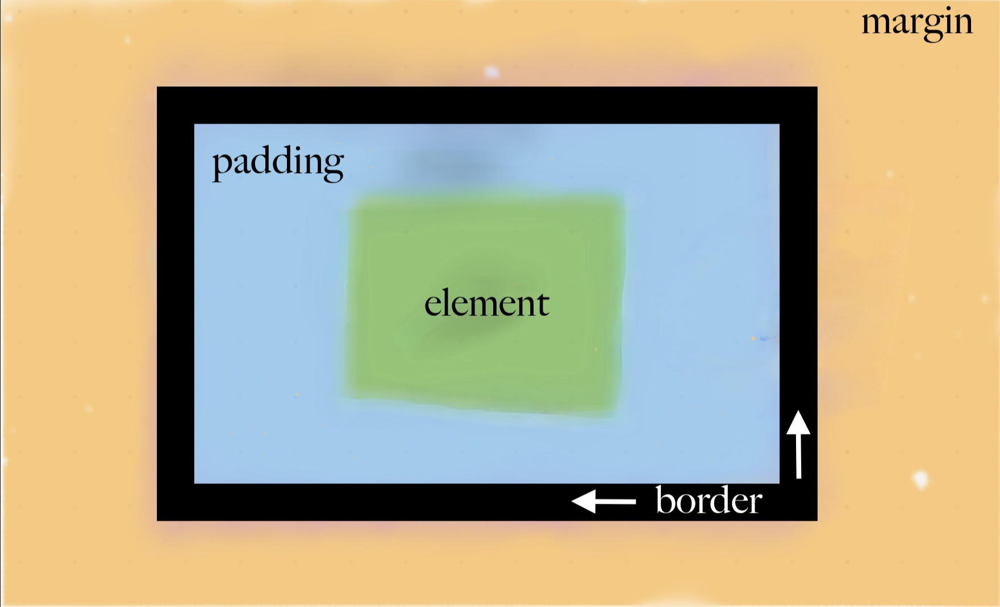
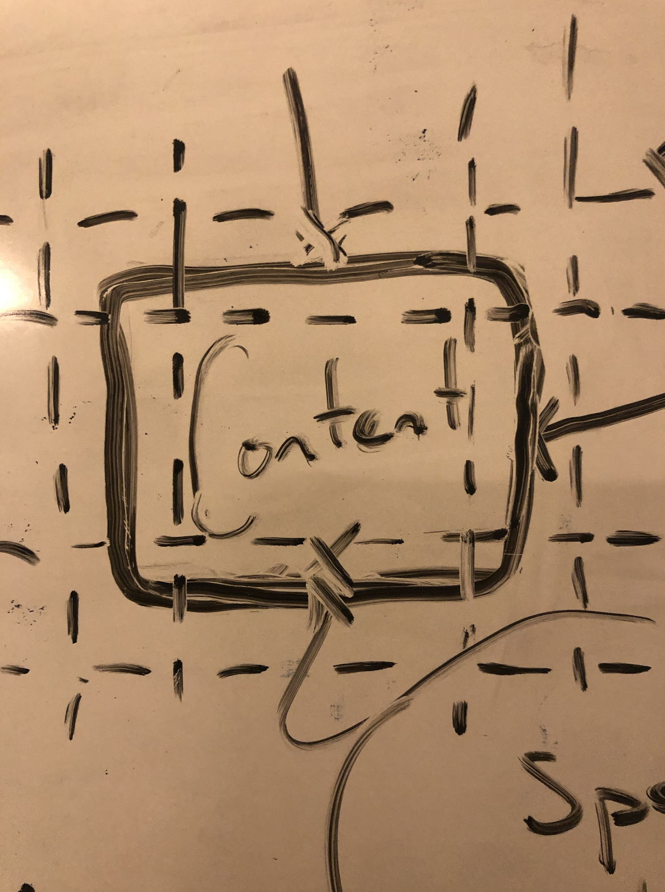

The first of my tech blog entries: Padding - Border - Margin
You may already know these three words, and have your own thoughts of what they are and do.
In this instance, we are looking into the structure of a webpagei.e. how an everyday web user, accesses and navigates a webpage and website.
If you search the words padding-border-margin, inevitably you will come across an image
similar to the one below.. (or probably something more accurate!)

So lets get started
One of my first little learnings, was the notion everything is a square!
Every little thing on a page has a square pattern at its foundation.
Even this circle at its core is a square..
So once this little idea landed, my internal visualisation began to take a firmer hold.

Padding
The above image shows a solid line square.
On the inside of that square, is a dashed line. This is the padding. Padding is the space
inside the content area. It acts like a cushion between the content and the border.
Padding is what creates a space inside the element and allows the content space to breath.
Border
Looking at the above image again, the border IS that solid line square.
The space in-between the margin and padding. The Border.
A border, as you can imagine is that edge; if we are on this little island in the Pacific, then
the border for us on this island would be the shore line, where the sea meets the land
Margin
The margin is a CSS property used to create space around the element, OUTSIDE of the border.
In other words the margin creates a gap around the border by 'pushing' the content away from
the border egde. It's always outside the border. The margin looks outwards from the border, letting
objects and content know, there is an element in the vacinity.
Worth noting, the margin has no colour/ is invisible. Margins can overlap. The larger margin number
of two elements will be the margin used between those elements/ objects.